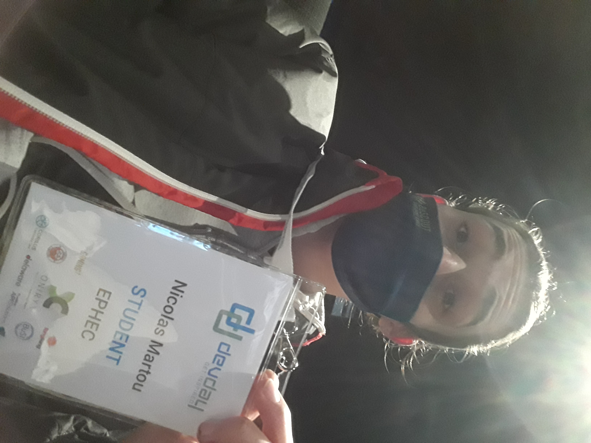
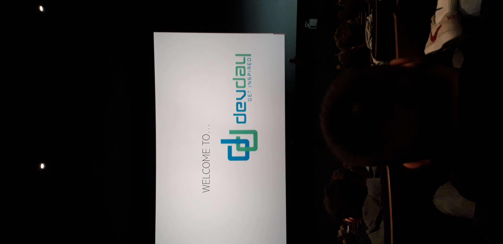
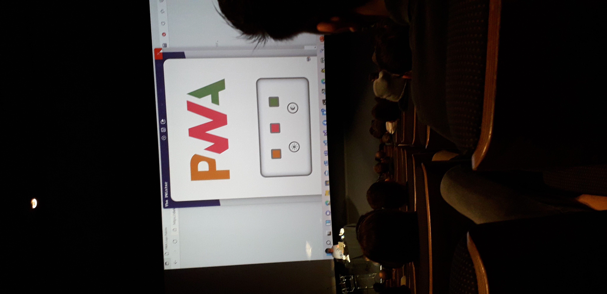
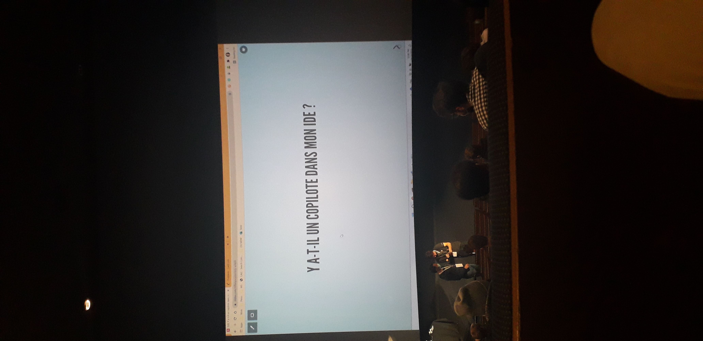
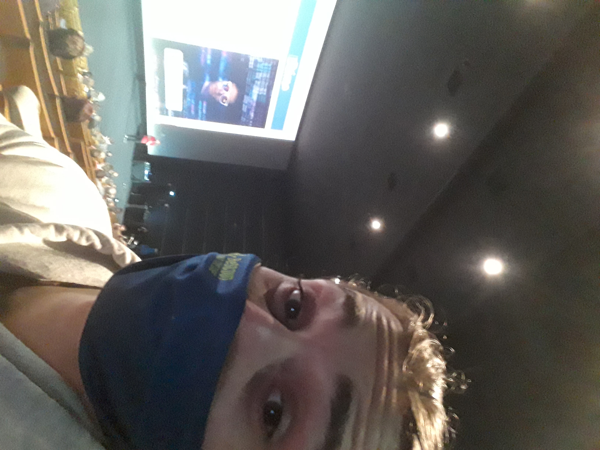
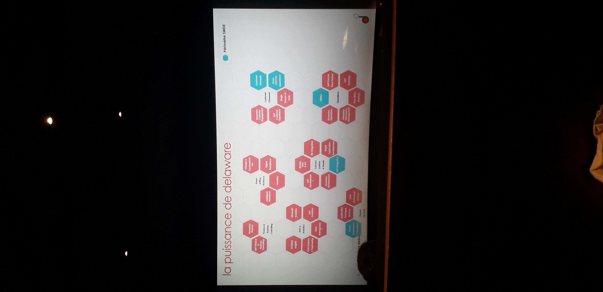

Le DevDay est un évènement rassemblant beaucoup de professionnels du développment. Ceux-ci ont présentés tout au long de la journé des sujets variés comme de nouvelles technologies, des bonnes pratiques, de la gestion d'équipe, etc... J'ai personnelement participé à 5 conférences sur cette journée.
La première était une conférence en anglais ou beaucoup d'astuces étaient données afin d'approcher le code seul ou en équipe d'une meilleure manière. L'intervenant était un développeur venant de chez MongoDB. C'était des astuces qu'ils avaient appliqués dans l'entreprise et c'était l'occasion de nous les partager.
La deuxième conférence traitait des PWA (Progressive Web Application) tout droit venu de chez Microsoft. Le but était de montrer l'étendue du futur de Windows (Windows 11 venait de sortir peu de temps avant) dans le développement web.
La troisième avait pour but de nous présenter la nouvelle IA sur le marché disponible en accès limité : Copilot. Cette IA a comme spécificité d'aider le développeur dans le code en proposant des solutions intelligentes à partir de projets public sur la plateforme GitHub.
La quatrième était rempli d'astuces afin de coder plus vite sur Visual Studio. C'est un développeur de chez Microsoft qui nous à appris beaucoup de raccourcis clavier durant cette présentation.
La dernière d'entre elle à été une présentation d'une équipe de développeur qui nous ont présenté les étapes de développement d'une plateforme qu'ils ont réalisé pour une entreprise.
Cet évènement à été pour moi une belle occasion afin de se plonger pleinement dans le monde du développeur en voyant ce qui se fait actuellement.
     {kind=link}
{kind=link}
{kind=link}
{kind=link}
{kind=link}
{kind=link}